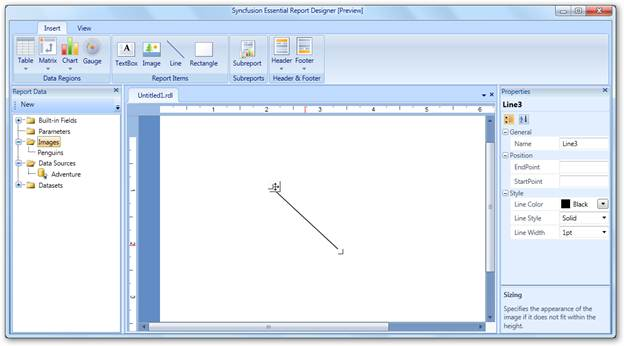
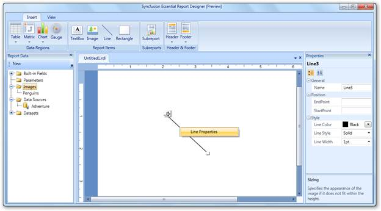
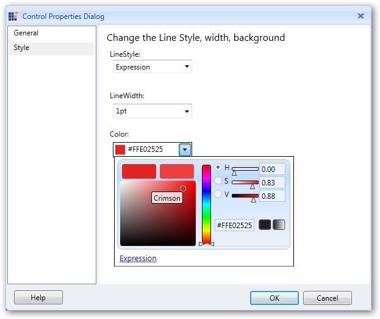
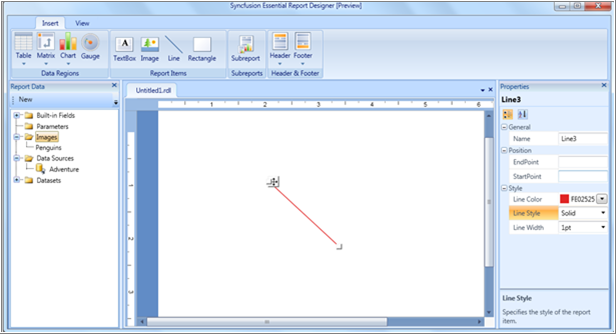
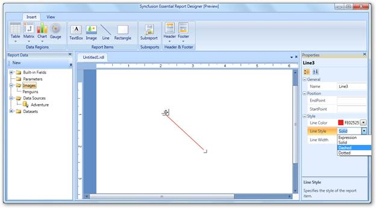
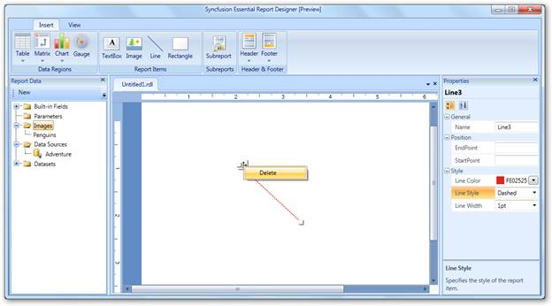

To add a line to the Report Designer, select Line from the Insert tab and drag it to the Report Designer. A line will appear on the Report Designer window.

Figure 42: Adding a Line to Report Designer
Applying Styles to the Line
To apply styles to the line:
1. Right-click on the added line and select Line Properties.

Figure 43: Line Properties
2. In the Control Properties Dialog, select Style to set the width, background color, and style of the line.

Figure 44: Control Properties Dialog
3. Click OK. It will display the line with applied styles.

Figure 45: Line Styled with Color
 Note: You can also set styles to the line using
the Properties grid at the right of Report Designer.
Note: You can also set styles to the line using
the Properties grid at the right of Report Designer.

Figure 46: Styling Line through Properties Grid
Deleting Lines
To delete the lines from the Report Designer, right-click on the line that you want to delete and click Delete.

Figure 47: Deleting a Line